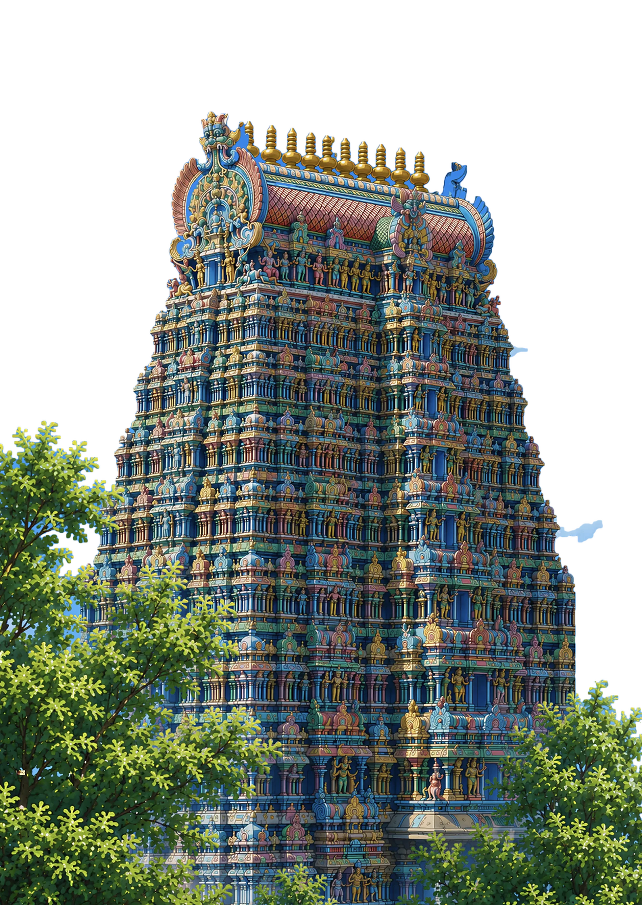
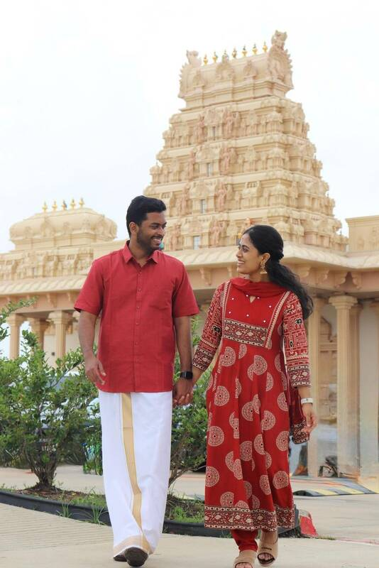
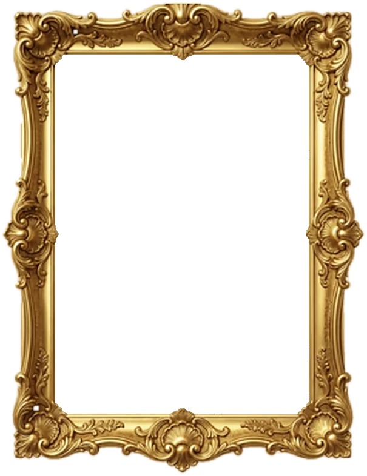

Photo placeholder
Muhurtam
22 November 2026
9:00 AM
Risa Banquets
Witness our sacred vows and wedding rituals in the presence of loved ones.
View LocationR. Abhaiguru weds SG. Dhanavarshini

||ஓம் ஸ்ரீ பரிபூர்ண விநாயகர் துணை||
With the heavenly blessings of our ancestors, and as decided by our elders and family members, we
Invite
you to the wedding of
SG. DHANAVARSHINI
Granddaughter of:
Mr. S.Govindan (Late) & Mrs. G.Chandra
Mr. SM.Chockalingam & Mrs. C.Meenatchi
together with
d/o Mr. G.Sankar Ganesh & Mrs. S.MuthuKumari
sis/o Mr. Vijay Govind
&
R. ABHAIGURU
Grandson of:
Mr. A.Balakrishnan (Late) & Mrs. B.Gomathi
Mr. S.Muthaiyan & Mrs. M.Padmavathi
together with
Mr. Ravirajan Balakrishnan & Mrs. Latha Ravirajan
On the following events
Abhai is a golden soul who makes everyone around him feel seen, valued, and loved. He brings laughter and warmth wherever he goes, loves his family deeply, gives endlessly, and always goes the extra mile for the people he cares about.
I could go on and on about him, but no amount of words could ever truly capture the person he is. And somewhere along the way, the person who makes everyone feel special became the person who made my world feel complete. Today, with hearts full of love, we invite you to celebrate the beginning of our forever.
Some people bring joy into a room. Varshini brings it to life.
Her energy is contagious, her laughter effortless, and with her, even the most ordinary days never feel quite ordinary.But beyond the fun and laughter is a rare grace; the patience to understand, the empathy to care, and the warmth to make everyone around her feel valued.
She has a beautiful way of giving far more than she asks for in return, holding the people she loves close, and bringing them together with quiet strength and deep respect.
And perhaps what I cherish most is who I become in her presence. She makes me feel understood and accepted, and makes me love myself a little more.
That is the person I feel incredibly fortunate to call my partner, and the one I feel blessed to walk through life with.


Touch here for magic